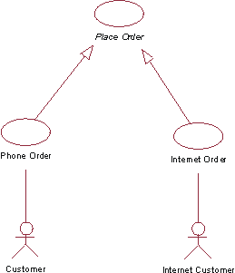
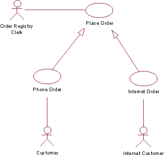
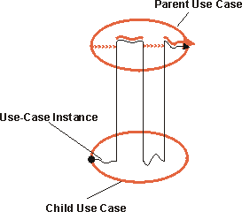
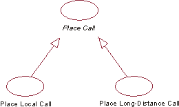

| Рекомендация: Обобщение варианта использования |
 |
|
| Связанные элементы |
|---|
ОбъяснениеРодительский вариант использования может быть сведен к одному или нескольким более специализированным дочерним вариантам, которые представляют его более конкретные формы. Ни родительский, ни дочерний варианты не обязательно должны быть абстрактными, хотя во многих случаях родительский вариант - абстрактный. Дочерний вариант использования наследует всю структуру, поведение и взаимосвязи родительского. Потомки одного и того же варианта использования представляют собой его специализированные варианты. Это обобщение, применяемое к вариантам использования (за дополнительной информацией о концепции обобщения, применимого к классам, обратитесь к Рекомендации: Обобщение). Обобщение применяется, если обнаруживаются два и более вариантов использования с унифицированным поведением, структурой и назначением. В этом случае общие компоненты можно описать в новом и, как правило, абстрактном варианте использования, который затем уточняется более специализированными дочерними вариантами использования. Пример:  Варианты использования Заказ по телефону и Заказ через Интернет - это специализации абстрактного варианта использования Разместить заказ. В системе управления заказами в структуре и поведении вариантов использования Заказ по телефону и Заказ через Интернет есть много общего. Общий вариант использования Разместить заказ определяется там, где определяется структура и общее поведение. Абстрактный вариант использования Разместить заказ сам по себе не обязательно должен быть полным, но он предоставляет общую структуру поведения, которую затем могут дополнять дочерние варианты использования. Родительский вариант использования - не всегда абстрактный. Пример: Рассмотрим систему Управление заказами из предыдущего примера. Предположим, что требуется добавить субъект Кладовщик, который может вводить в систему заказы по поручению клиента. Этот субъект должен инициировать общий вариант использования Разместить заказ, для которого уже должен быть описан полный поток событий. Дочерние варианты использования могут добавлять действия в структуру, предоставляемую родительским вариантом использования, а также видоизменять действия в родительском варианте использования.  Субъект Кладовщик может создать экземпляр варианта использования Разместить заказ. Последний может уточняться специализированными вариантами использования Заказ по телефону или Заказ через Интернет. Дочерний вариант использования зависит от структуры родительского варианта использования (см. обсуждение структуры потока событий в разделе Рекомендация: Вариант использования). Дочерний вариант использования может добавлять в родительский вариант использования дополнительные действия путем их включения в наследуемое поведение или за счет объявления отношений включения или расширения для дочернего варианта использования. Потомок может изменять сегменты поведения, наследуемые от предка; однако, это необходимо делать с осторожностью, чтобы не изменить цель родительского варианта использования. Дочерние варианты сохраняют структуру родительского варианта использования. Это означает, что по-прежнему должны существовать все сегменты поведения, описанные как шаги или подпотоки потока событий родительского варианта использования, но содержимое этих сегментов может изменяться дочерним вариантом использования. Если родительский вариант использования - абстрактный, то он может содержать неполные сегменты поведения. Потомок должен завершить эти сегменты и сделать их значимыми для субъекта. Если родительский вариант использования - абстрактный, то для него необязательно должна существовать связь с субъектом. Если два дочерних варианта использования представляют собой специализированные варианты одного и того же родительского (или базового) варианта использования, то они не зависят друг от друга. Это означает, что они выполняются в отдельных экземплярах варианта использования. Этим они отличаются от отношений расширения и включения, когда несколько дополнений неявно или явно модифицируют один экземпляр варианта использования, выполняющий тот же самый базовый вариант использования. Как обобщение, так и включение позволяют многократно использовать действия одного варианта использования в других вариантах использования в модели. Различие между ними состоит в том, что в случае обобщения выполнение дочерних вариантов использования зависит от структуры и поведения родительского варианта использования (повторно используемая часть), тогда как в случае включения выполнение базового варианта использования зависит только от результата функции, которую выполняет включаемый вариант использования (повторно используемая часть). Другое отличие состоит в том, что дочерние варианты в обобщении имеют общую цель и совместно используют одинаковые элементы структуры, тогда как в отношении включения базовые варианты использования, которые многократно используют одно и то же включение, могут иметь совершенно разные цели, но они требуют, чтобы выполнялась одна и та же функция. Выполнение обобщения варианта использованияЭкземпляр варианта использования, выполняющий дочерний вариант использования, будет следовать по потоку событий, описанному для родительского варианта использования, добавляя дополнительные действия и изменяя действия родительского варианта в соответствии с описанием потока событий дочернего варианта.  Экземпляр варианта использования выполняет действия из родительского варианта использования, а также действия, включенные в него или измененные в соответствии с описанием дочернего варианта использования. Описание обобщения варианта использованияВообще, само отношение обобщения не описывается. Вместо этого в потоке событий дочернего варианта использования указывается, каким образом в наследуемое поведение вставляются новые шаги, и как оно при этом изменяется. Если дочерний вариант использования уточняет несколько родительских вариантов (множественное наследование), то в его спецификации следует явно установить, каким образом в нем чередуются последовательности поведения, наследуемые от родительских вариантов использования. Пример примененияРассмотрим следующие пошаговые схемы вариантов использования для простой телефонной системы: Местный телефонный вызов
Междугородный телефонный вызов
Текст, выделенный синим цветом, очень похож в обоих вариантах использования. Если оба варианта настолько схожи, то можно объединить их в один, в котором различия между местными и междугородными телефонными вызовами будут описываться дополнительными подпотоками. Однако, если различие между ними достаточно важно, и в модели вариантов использования есть смысл показать отношение между местным и междугородным вызовом, то общее поведение можно извлечь в новый, более общий вариант использования под названием Телефонный вызов. В диаграмме варианта использования созданное отношение обобщения будет иллюстрироваться следующим образом:  Варианты использования Местный телефонный вызов и Междугородный телефонный вызов наследуются от абстрактного варианта использования Телефонный вызов. |
© Copyright IBM Corp. 1987, 2006. Все права защищены.. |